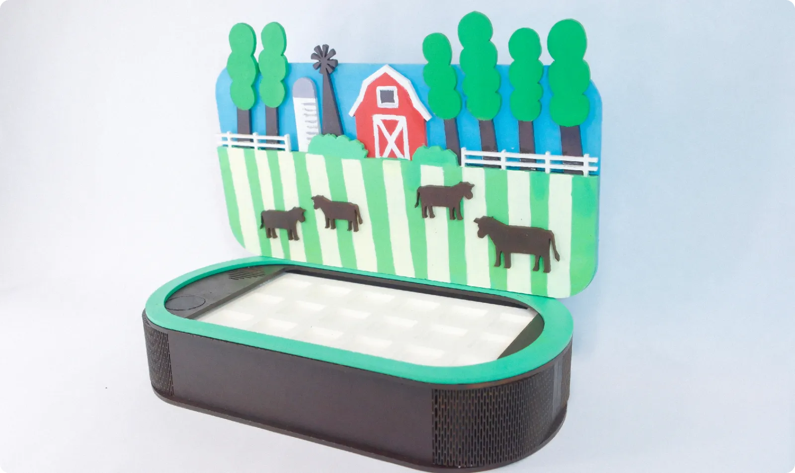
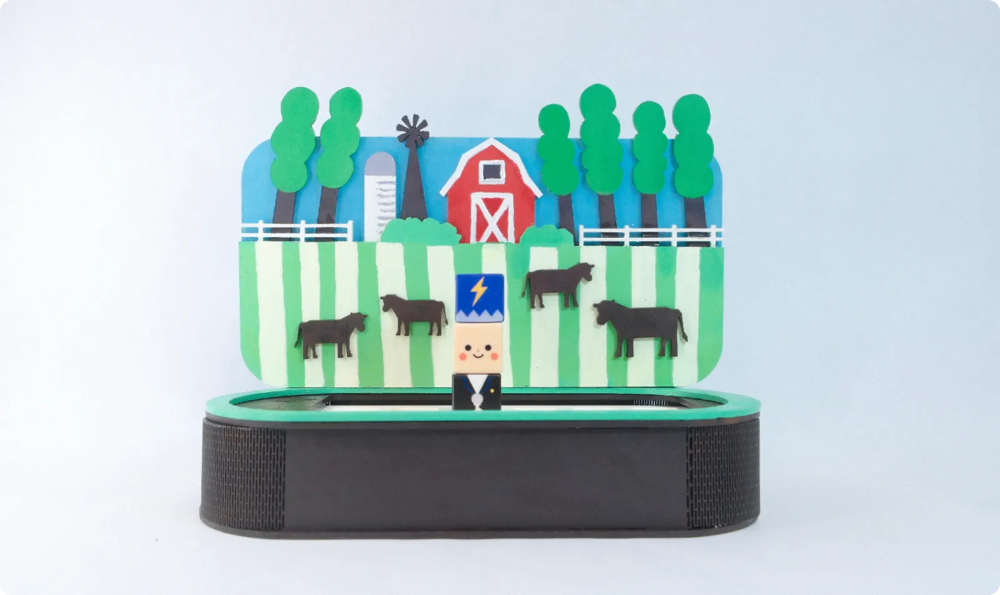
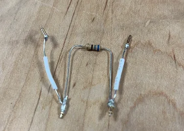

Stack three blocks. Start a band.
SCROLL
Bandy turns music into building blocks. Stack a hat, a face and an outfit to create a band member, and every combination sounds different. Match your band as you wish.
- Course
- IXDS 734 · SCAD · Spring 2026
- Team
- Yutong Gao, Minwei Wu, Qiling Chen
- Built with
- ESP32 · pogo pins · Arduino IDE · Processing · laser cutting
- Category
- Tangible interaction · Toy design


My role
One of three designers, from the block system and character design to the physical stage, the electronics and the vision film.
- Concept & interaction
- Character & block design
- Physical prototyping
- Electronics & code
- Vision film
Vision film
Match your band as you wish.
The idea
Every block is a musical choice.
Making music usually starts with rules: notes, scales, instruments. Bandy starts with play. Each band member is a stack of three blocks, and each layer controls one part of the sound, so kids and adults can compose just by stacking.


 Hat
HatSound effect
Monster, elf, electric, glitch, bubble or robot: the hat colours the voice.
- Face
Rhythm
An angry face hits hard; a sleepy one drags lazily. The mood sets the beat.
- Outfit
Instrument
Guitar, singer, piano, bass, violin or drums: the outfit decides who plays.
Build a band member
It mixes itself. Tap a block to change it.
Now playing
216 possible band members from 18 blocks
The stage
A little farm where the band plays.
The blocks live on a laser-cut stage: a container with a tenon-and-mortise frame, a grid of slots for the band, and a painted, layered farm scene behind it. Place a member in a slot and it starts to play.




How it works
Resistors tell the board who is who.


- Pogo pinsSpring-loaded pins pass power, ground and signal through the stack, so blocks connect just by sitting on top of each other.
- A resistor in every blockEach block hides a resistor with its own value, a fingerprint the board can read.
- ESP32Reads one input per layer (pins 32, 33 and 34) and works out which hat, face and outfit are stacked.
- ProcessingTurns the combination into sound: the instrument, its rhythm and its effect.




A working MVP
Before painting anything, we proved the core loop: stack blocks on the breadboard rig, and the laptop recognises them and plays the matching sound in real time.
Next project
Fitfido
View case study